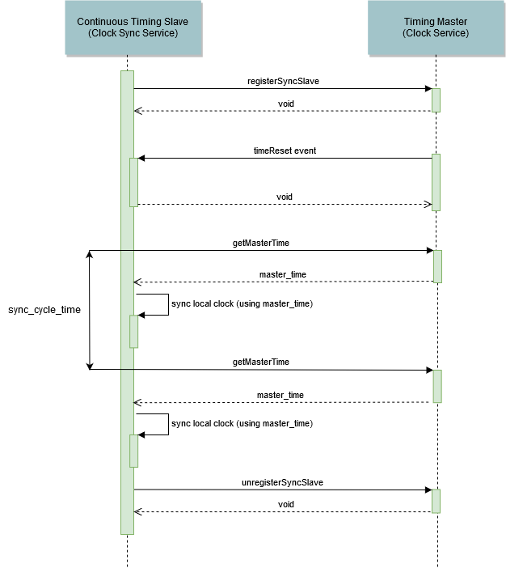
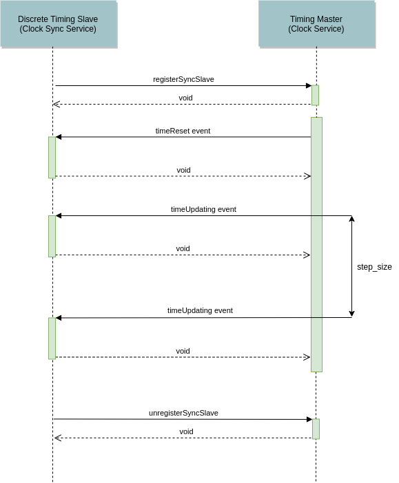

Clock Sync Service
Summary
Name |
Clock Sync Service |
Component Interface |
|
RPC Service Interface |
|
RPC Service Description |
|
native delivery |
built-in |
CPP-plugin possible |
yes |
C-plugin possible |
no |
Overview
The Clock Sync Service provides functionality to synchronize the local time of a slave participant with the time of a timing master participant. For this purpose, two native timing slave clock implementations are provided. To synchronize a timing slave with a timing master, the timing master and the corresponding Main Clock have to be configured using FEP Properties. Depending on the timing master’s Main Clock, various Native Implementations can be configured as active clock for a timing slave.
The counterpart of a slave is the RPC Clock Sync Master on the master side.
Component Interface
The fep3::arya::IClockSyncService currently offers no functionality.
RPC Service Interface
The fep3::rpc::arya::IRPCClockSyncSlaveDef offers the following functionality:
Being able to receive a syncTimeEvent.
There are currently the following types of syncTimeEvent s (See fep3::rpc::arya::IRPCClockSyncMasterDef for details).
timeUpdateBefore
timeUpdating
timeUpdateAfter
timeReset
Configuration
In order to establish a slave synchronization, the Main Clock of the Clock Service has to be set. Using the Native Implementations either the slave_master_on_demand or slave_master_on_demand_discrete can be set as the Main Clock of the slave.
Properties
Name |
Code Macro |
Default Value |
|---|---|---|
MainClock |
Native Implementations
Among the following built-in native implementations for slave clocks can be choosen.
Name |
Code Macro |
Type |
|---|---|---|
slave_master_on_demand
The slave_master_on_demand is a Continuous timing slave clock. It cyclically requests the current simulation time from the timing master’s continuous clock and synchronizes it’s local time with the time of the master using the Cristian’s algorithm.
A concrete setup could look like that:
The timing master has to use a continuous main clock (e.g. local_system_realtime).
The timing slave uses the slave_master_on_demand clock to cyclically (here every 100ms) synchronize its local time with the timing master.
Note
The slave_master_on_demand clock can only be used if the clock of the master is of Continuous type.
The following image shows a continuous synchronization in more detail.
At first the timing slave registers with the timing master. This is necessary to receive the timeReset events. After registration and once the simulation starts the timing master will first send a timeReset event to the slave. After that the timing slave will cyclically retrieve the master time in an interval of sync_cycle_time (in wall clock time). In case of the slave_master_on_demand clock this time will be used to set the local time of the slave using the Cristian’s algorithm. When the simulation is stopped the timing slave will unregister from the master.
Properties
The slave_master_on_demand clock can be configured using the following properties.
Name |
Code Macro |
Default Value |
|---|---|---|
SyncCycleTime |
slave_master_on_demand_discrete
The slave_master_on_demand_discrete clock will try to register to the timing master (FEP3_CLOCKSYNC_SERVICE_CONFIG_TIMING_MASTER)
when the Clock Sync Service is tensing (fep3::arya::IComponent::tense()).
If the timing master is not available by that time it will cyclically try to register again.
After registration the slave_master_on_demand_discrete clock will receive timeUpdating events from the timing master and will set its local time accordingly.
A concrete setup could look like that:
The timing master has to use a discrete Main Clock (e.g. local_system_simtime).
The timing slave uses the slave_master_on_demand_discrete clock.
Note
The slave_master_on_demand_discrete clock can only be used if the clock of the master is of Discrete type.
The following image shows a discrete synchronization in more detail.
At first the timing slave registers with the timing master. After registration and once the simulation starts the timing master will first send a timeReset event to the slave. After that it will send timeUpdating events whenever it’s local time changes. The time of the master will change in an interval of step_size. The step_size is the resolution of the simulation time. Since it’s a simulated time, the real time difference (in wall clock time) between to timeUpdating events is not necessarily the step_size (see local_system_simtime for details). When the simulation is stopped the timing slave will unregister from the master.
